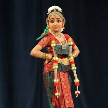
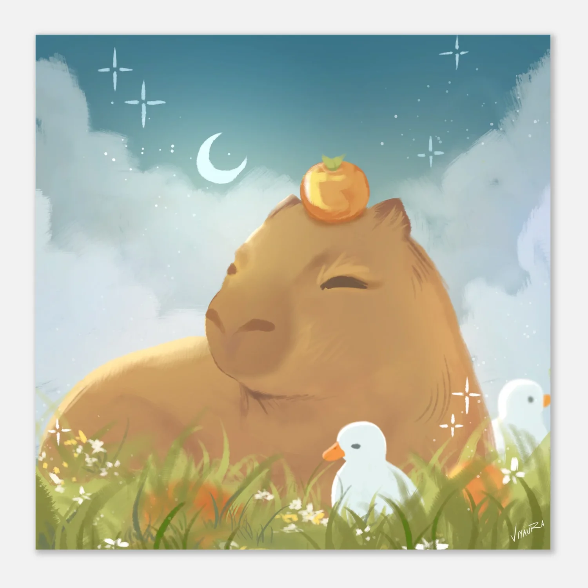
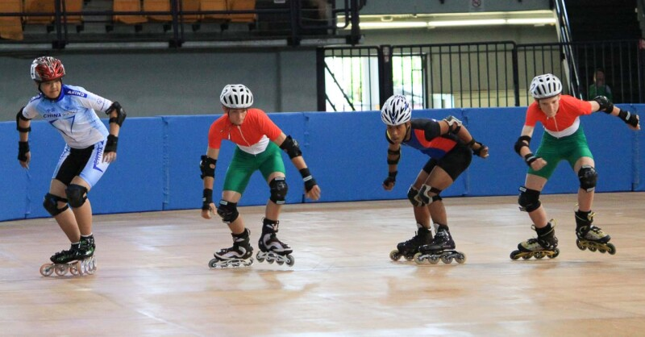

Soccer, or association football, is the world's most popular sport, played between two teams of 11 players who use their feet to move a ball around a pitch. The sport is governed globally by FIFA, with the major 2026 World Cup featuring 48 teams across 104 matches, according to FIFA. It is widely followed in the UAE and internationally.

Bharatanatyam is an ancient Indian classical dance form originating from Tamil Nadu, characterized by grace, purity, sculptural poses, and dramatic storytelling. Rooted in the Natya Shastra, it historically evolved in temples as a sacred offering by Devadasis and features intricate footwork, hand gestures (mudras), and expressive eye movements.

Using apps or devices to create drawings and designs digitally instead of on paper. It allows easy editing, coloring, and experimenting with styles. This hobby improves creativity and technical skills. It can also be shared online with others.

Making pictures using pencils, pens, or colors on paper. It helps express thoughts, ideas, and imagination. Practicing drawing improves focus and artistic skills. It can be done anywhere and is very relaxing.
Reading stories or informational texts from books. It helps improve vocabulary and understanding. Books can take you into different worlds and ideas. It also builds focus and imagination.
Playing games like Minecraft and Roblox that involve creativity and challenges. These games allow players to build, explore, and interact. They help improve problem-solving and thinking skills. Gaming can also be fun and relaxing when balanced.

A fun activity where you move using shoes with wheels. It helps improve balance, coordination, and strength. You can skate indoors or outdoors with friends. It’s both a hobby and a form of exercise.